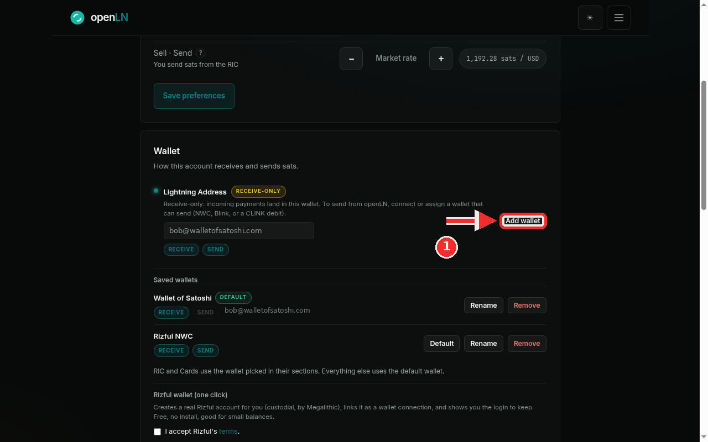
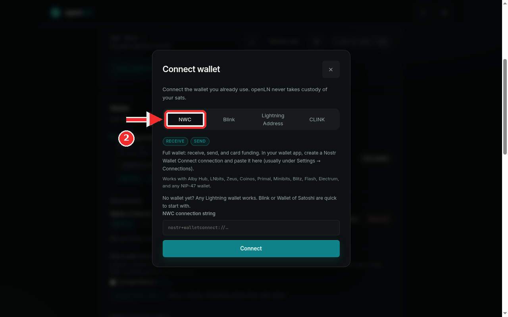
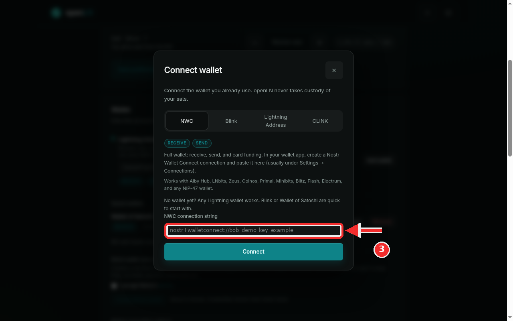
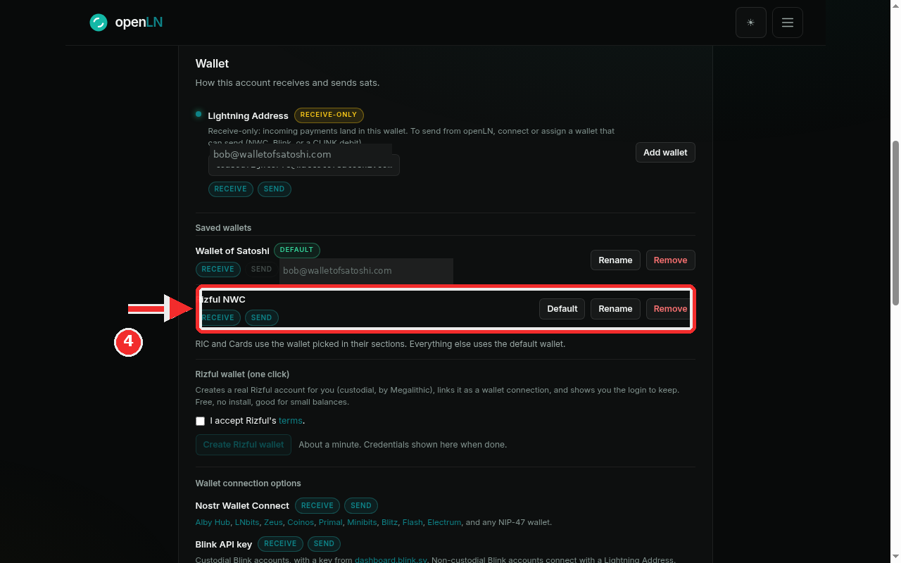

How to connect a Nostr Wallet Connect wallet
Nostr Wallet Connect, or NWC, is the fullest way to connect a wallet to openLN. It gives openLN receive and send: sats come into your wallet when customers pay, sats go out when you use the sending features, and openLN can read the balance and fund cards from the same wallet. It works with any NIP-47 wallet, which covers most Lightning wallets today. All you need is a connection string you copy from your wallet app. The whole thing takes about two minutes.
- You are signed in to your openLN account (any device, phone or computer).
- You have a wallet app that can create a Nostr Wallet Connect connection: Alby Hub, Zeus, Coinos, Primal, Minibits, Blitz, Flash, Electrum, or any other NIP-47 wallet. In most apps this lives under Settings, then Connections or Apps.
- You have the connection string copied in full. It starts with
nostr+walletconnect://and is a secret, so keep it out of chats and screenshots. - Nothing is charged during setup and no funds move.
Open the Wallet card and press Add wallet
Go to Settings and find the Wallet card, the one that starts with "How this account receives and sends sats". On the right of the card there is a button: it reads Add wallet when at least one wallet is already saved, and Connect when none is. Click it; both open the same dialog. In this screenshot the account already has two wallets saved, so the button reads Add wallet.

Choose the NWC tab
The Connect wallet dialog has four tabs: NWC, Blink, Lightning Address and CLINK. Keep the NWC tab, the first one, selected. The chips under it say RECEIVE and SEND, so this kind of wallet both receives and sends, and the line below explains that it is a full wallet for receive, send and card funding. The dialog also reminds you to create the connection in your wallet app first, usually under Settings, then Connections. Here is the NWC line from the dialog: "Works with Alby Hub, LNbits, Zeus, Coinos, Primal, Minibits, Blitz, Flash, Electrum, and any NIP-47 wallet."

Paste your NWC connection string
Click the field labeled NWC connection string and paste the string you copied from your wallet app. The screenshots use a shortened demo value, nostr+walletconnect://bob_demo_key_example. A real string is much longer, because it carries the wallet's public key, at least one relay address and the secret. Paste it in full. If a piece is missing, the dialog answers "Paste the complete NWC connection, including relay and secret."

Press Connect and check Settings
Press the big Connect button. openLN asks your wallet for its balance as a live check and only saves the connection if the wallet answers; if it cannot, you see "Could not read this wallet. Check its NWC permissions and connection; nothing was changed." and nothing is saved. Pasting a string that is already connected answers "This wallet is already connected." On success you are back in Settings and the new row appears under Saved wallets, tagged RECEIVE and SEND. It is named after the provider the string declares; the demo used a Rizful wallet, so the row is called Rizful NWC. You can press Rename if you want a different label, see the manage wallets guide.

- A full wallet. NWC gives receive and send, plus balance reads and card funding, so it can be picked wherever sending is needed and in the RIC and Cards sections, or left as the default for everything. As the app puts it: "RIC and Cards use the wallet picked in their sections. Everything else uses the default wallet."
- Keep the string private. It is a secret credential: anyone who has it can use the connection. Never paste it into a chat or a support message and never include it in a screenshot. If it leaks, revoke the connection in your wallet app and create a new one.
- Your keys, your sats. openLN never takes custody of your sats. The connection only lets openLN ask your wallet to receive and to pay. You can remove the wallet from openLN's Saved wallets list, or revoke the connection in your wallet app, at any time.